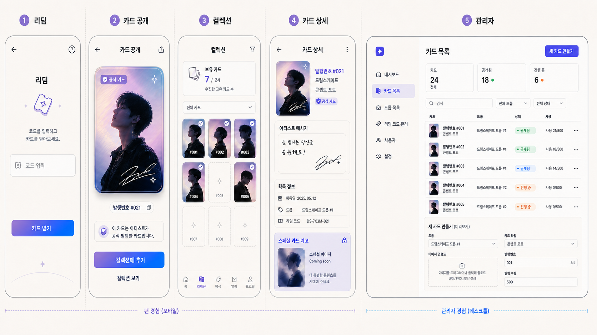
서비스 개요
팬 앱 → 관리자 웹 → 아티스트 스튜디오
서비스의 주요 화면과 역할별 진입점을 먼저 확인합니다.
FANFOLIO · UI/UX REVIEW
팬용 모바일 앱, 관리자 운영 웹, 아티스트 특별 카드 스튜디오의 모든 예시 시안을 한곳에 모았습니다. 카드를 클릭하면 크게 볼 수 있고, 역할별 필터로 필요한 흐름만 확인할 수 있습니다.
팬 경험·관리자 경험을 한눈에 보는 개요

서비스의 주요 화면과 역할별 진입점을 먼저 확인합니다.
가입부터 코드·QR 발급, 탐색과 개인 컬렉션까지
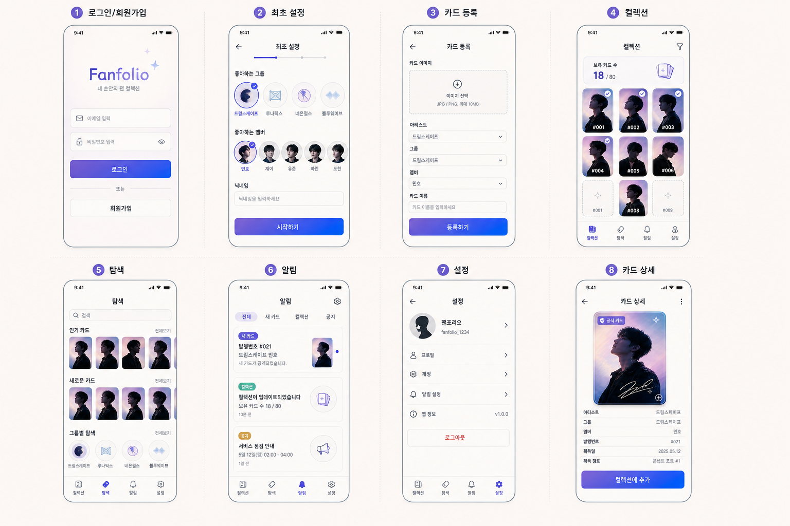
팬이 앱에서 이용할 핵심 메뉴와 화면 구성입니다.
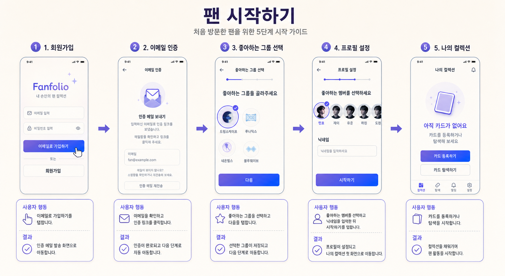
이메일 인증 후 좋아하는 그룹, 멤버, 닉네임을 설정합니다.
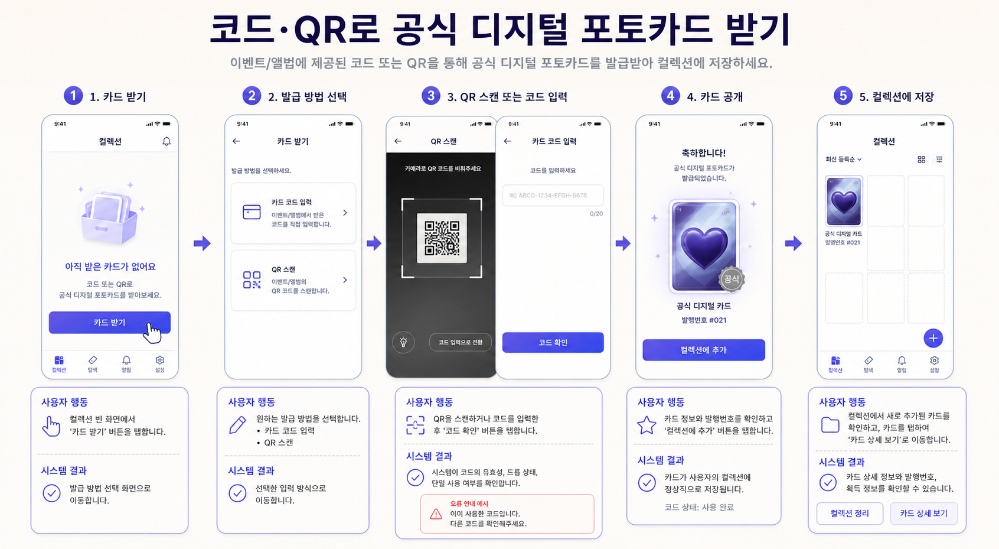
직접 등록 대신 코드 입력 또는 QR 스캔으로 공식 디지털 카드를 발급받습니다.
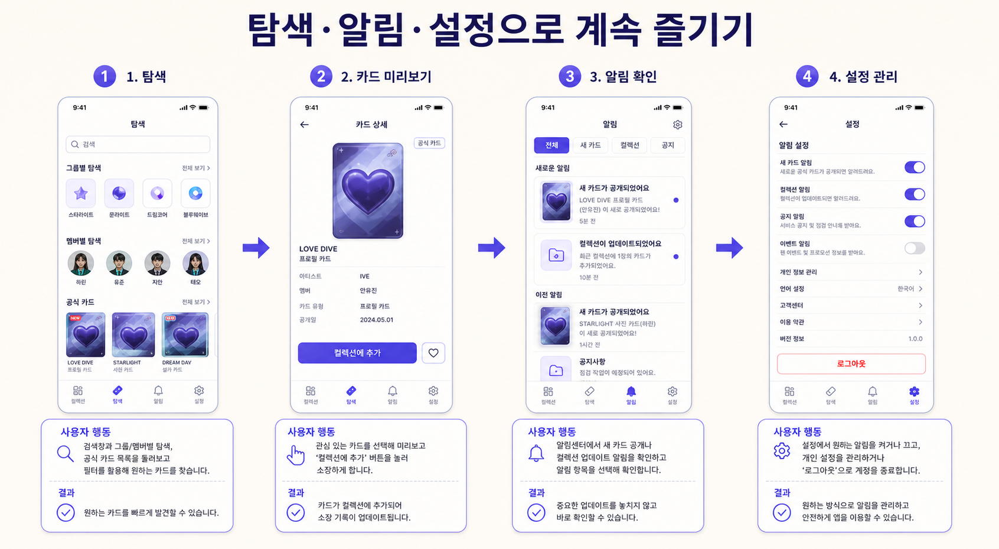
관심 카드 탐색, 새 카드 알림 확인, 개인 설정 관리를 제공합니다.
카드·드롭·리딤 코드를 만들고 사용 현황을 관리
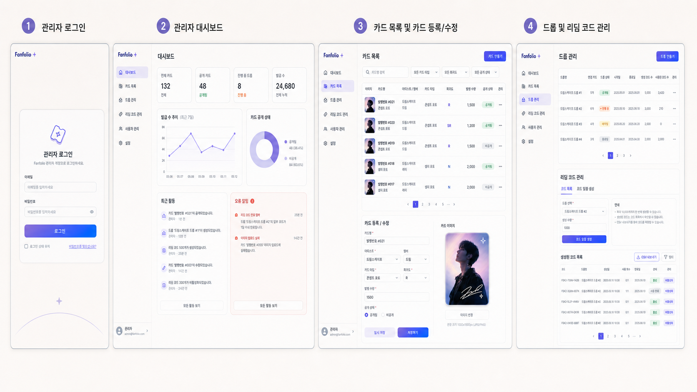
운영자가 보는 관리 화면의 기본 정보 구조입니다.
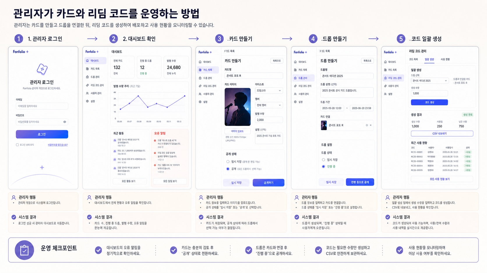
카드 공개, 드롭 연결, 코드 일괄 생성과 사용 현황 확인 과정을 설명합니다.
아티스트가 공식 특별 카드를 템플릿으로 제작·검수·공개
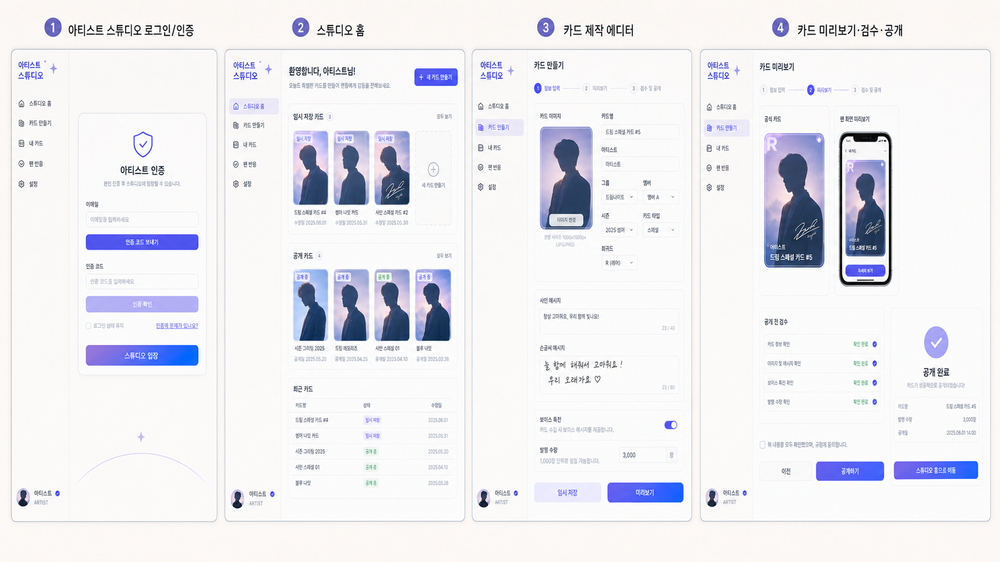
아티스트 전용의 간결한 카드 제작 환경입니다.
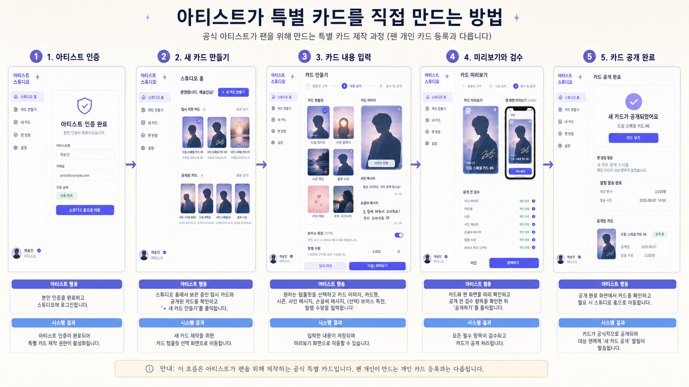
템플릿 선택, 내용 입력, 팬 화면 미리보기, 공개 과정을 보여 줍니다.
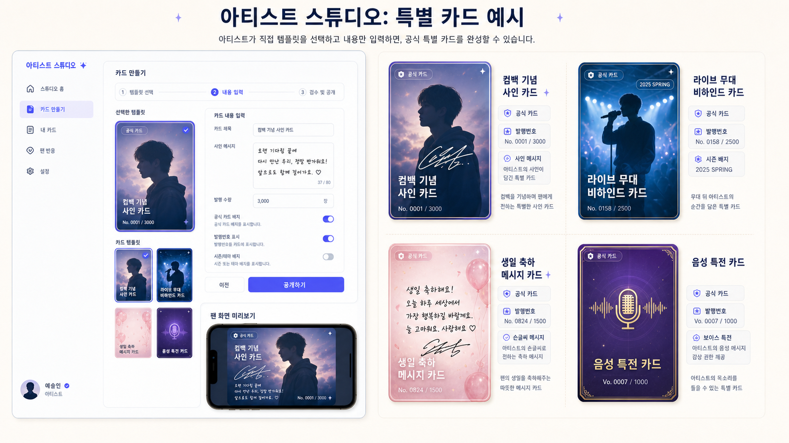
아티스트가 만들 수 있는 공식 특별 카드 유형을 예시로 제시합니다.
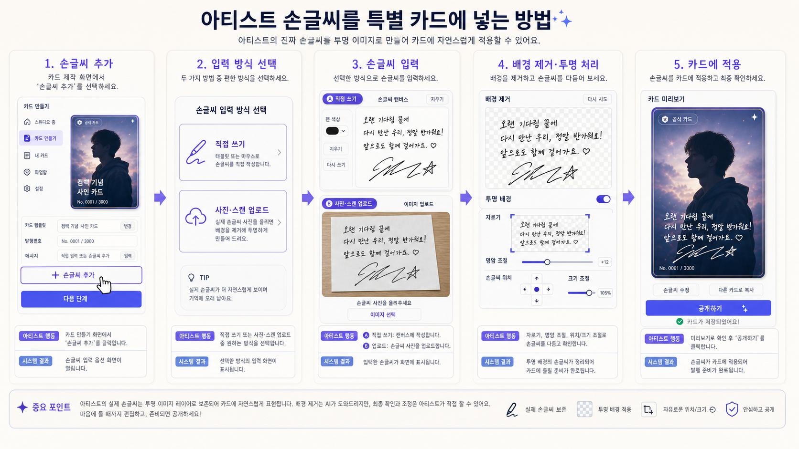
실제 손글씨 사진을 투명 레이어로 분리해 카드에 배치할 수 있습니다.
선택한 역할에 해당하는 시안이 없습니다.